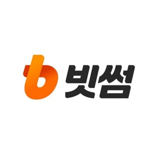

HOT오늘도 글
국내 블록체인·가상자산 전문 매체의 공개 채널입니다.
시황·정책·시장을 기사 형식으로 전하는 공식 채널이라 개인 리딩방과 구분된다.
미디어 속보와 거래소 공지
오늘 읽을 글: 가상자산 글, 창립자·데이터·공지를 나눠 읽는 법
HOT오늘도 글
국내 블록체인·가상자산 전문 매체의 공개 채널입니다.
시황·정책·시장을 기사 형식으로 전하는 공식 채널이라 개인 리딩방과 구분된다.
HOT오늘도 글
국내 가상자산 시황 매체의 공개 채널입니다.
코인니스 공식 뉴스 피드. 사칭 채널이 많아, 확인된 핸들만 넣었다.

빗썸 공식 채널HOT오늘도 글3일 연속
국내 거래소 빗썸의 공식 공개 채널입니다. 공지 원문은 이 사이트에 옮기지 않습니다.
빗썸 공식 공지. 업비트와 같이 '사실 확인' 창구로만 쓴다.
HOT오늘도 글3일 연속
국내 거래소 업비트의 공식 공개 채널입니다. 공지 원문은 이 사이트에 옮기지 않습니다.
업비트 공식 공지. 해설이 아니라 입출금·거래지원 사실 확인용으로 고른다.
HOT오늘도 글
국내 가상자산 전문 매체의 공개 채널입니다.
국내 블록체인 미디어 공식 채널. 속보에 원문 링크가 붙어 출처를 따라가기 쉽다.
HOT오늘도 글4일 연속
해외 가상자산·웹3 매체입니다.
크립토와 AI가 겹치는 소식을 자주 다뤄, 국내 코인 속보만 볼 때 빠지는 교점을 본다.
HOT오늘도 글
해외 가상자산 전문 매체입니다.
글로벌 크립토 미디어. 국내 속보와 같은 이슈를 영어로 어떻게 쓰는지 대조할 때 쓴다.
HOT오늘도 글
해외 가상자산 전문 매체입니다.
크립토 전문 매체. 코인데스크와 겹치는 날을 비교해 읽는 용도다.
오늘도 글
온체인 데이터를 다루는 국내 기업의 공식 채널입니다.
온체인 지표를 직접 언급하는 창구라 미디어 속보와 역할이 다르다. 공개 글은 영어가 많아, 한글 브리핑 뒤 원문으로 간다.
앤드리슨 호로위츠(Andreessen Horowitz)의 암호화폐 리서치 블로그입니다.
벤처캐피털의 크립토 글. 투자사 관점임을 밝히고, 재단·미디어와 나눠 읽는다.
 이더리움 재단(Ethereum Foundation) 블로그
이더리움 재단(Ethereum Foundation) 블로그
이더리움 재단의 공식 공개 블로그입니다.
이더리움 재단 공식 글. 가격 뉴스와 구분해 기술·정책 원문으로 쓴다.
이더리움(Ethereum) 공동 창립자로 공개 정체성이 확인됩니다.
개인 에세이라 매체 속보와 결이 다르다. 빈도는 낮아도 남겨 둔다.
Staff guidance lets swap venues and clearinghouses count Bitcoin, Ethereum, and stablecoins toward their 12-month operating-cost buffer. Here's the c…
키모도·RTX 경로 추적 1.9 담은 엔비디아 게임 도구 업데이트 언리얼 엔진 5.9 프리뷰에 동작 생성 모델 키모도가 연동됐고, DLSS 5의 워썬더 적용 사례도 소개됐다. 엔비디아는 RTX Path Tracing 1.9의 성능이 이전 버전보다 약 20% 높아졌다고…
앱토스(APT) 스테이블코인 7일간 13.01% 증가 앱토스 네트워크의 스테이블코인 시가총액은 24일 9억5728만달러를 기록했다. 최근 30일간 36.08% 늘었다. #앱토스 #스테이블코인 #디파이라마 #USDC 🔗 토큰포스트 기사 원문
256개 관측값으로 시장 예측 학습…엔비디아 예제 공개 엔비디아가 시장 막대 데이터로 수익률과 거래량을 예측하도록 설계한 학습 예제를 공개했다. 설정 예시는 관측값 256개를 한 문맥에 담으며, 예측 성능이나 투자 성과는 제시하지 않았다. #엔비디아 #AI #금융데이…
미 테크 고용 비중 2.3%…골드만삭스 집계, 장기 추세 밑돌아 소프트웨어 출판 등 네 업종이 미국 전체 고용에서 차지하는 비중은 2026년 약 2.3%다. 골드만삭스는 AI 대체·보완 효과를 합친 월간 고용 증가폭의 순감소를 1만6000명으로 추정했다. #미국고용…
트론 인크 6974만1000주 매각 계약…세 법인에 나눠 배정 브레이브모닝은 트론 인크 주식 6974만1000주를 세 법인에 넘기는 계약을 맺었다. 매수 법인마다 2324만7000주가 배정됐다. #트론인크 #브레이브모닝 #저스틴선 #지분매각 🔗 토큰포스트 기사 원문
클로드 MCP 스킬 공개 베타…장기 작업 기능 정식 제공 앤트로픽은 MCP 서버가 업무 지침을 함께 제공하는 기능을 클로드와 클로드 코드에서 시험 공개했다. 장기 작업과 중간 입력 요청 기능은 요금제별로 정식 제공된다. #앤트로픽 #클로드 #MCP #인공지능 🔗 토큰…
젠슨 황 관련 주제 3개, 웨이보 인기 검색어 10위권 진입 이사회 조치는 회사 발표 전날 이뤄졌으며, 엔비디아는 독립 이사회 조사를 계속하겠다고 밝혔다. 웨이보 반응에는 복귀를 반기는 글과 미국 언론 비판, 주가 변동에 의문을 제기하는 글이 함께 나왔다. #엔비디아…
길리어드 2025년 HIV 매출 27조8900억원, 항암 제품은 2% 감소 길리어드 사이언스의 2025년 HIV 제품 매출은 207억5200만달러(약 27조8900억원)로 전년보다 6% 늘었다. 윌리엄 블레어는 바이러스학 부문의 중단기 성장과 항암 사업의 성장 잠재력…
The Financial Services Commission’s draft Digital Asset Act would let domestic projects sell tokens again under IPO-style disclosure rules, reversing…
Krak has opened a waitlist for two U.S. credit card products, including a secured card that uses USDC as collateral.
토큰화 국채펀드 1억2004만달러 순유입…자산 83% 솔라나 체인 스테이트스트리트와 갤럭시디지털이 운용하는 SWEEP의 최근 7일 순유입액은 1억2004만달러다. 온체인 운용자산 4억5477만달러 가운데 약 83%가 솔라나에 있다. #토큰화자산 #미국국채 #SWEEP…
AI 기업 80곳 상담…정부 지원사업·제조 AI 전환 사례 공유 한국인공지능·소프트웨어산업협회가 24일 공급·수요기업 80개사의 일대일 상담을 진행했다. 별도 정부안에는 물류·제조 실증과 피지컬 AI 트레이닝센터 예산이 담겼다. #인공지능 #피지컬AI #로봇 #정부예…
비트코인 목표 최대 5개…렐라이 적립 기능 출시 렐라이가 스위스와 EU 이용자를 대상으로 목표별 비트코인 적립 기능을 선보였다. 이용자는 구획마다 주소와 잔액, 적립 계획을 나눠 관리할 수 있다. #비트코인 #렐라이 #자기수탁지갑 #적립계획 🔗 토큰포스트 기사 원문
토큰화 주식 디파이 예치 3680억원…솔라나(SOL) 32% 토큰화 주식의 디파이 예치 규모는 2억7400만달러로 집계됐다. 이 가운데 솔라나 비중은 32%로, 전체 토큰화 자산의 디파이 배치율과는 별도 지표다. #토큰화주식 #디파이 #솔라나 #실물연계자산 🔗 토큰포…
리알토, 500만달러 시드 유치…로빈후드·텐덤 공동 주도 로빈후드와 텐덤이 온체인 거래 플랫폼 리알토의 500만달러 시드 투자를 공동 주도했다. 리알토 공동창업자는 앱과 API의 누적 현물 거래량이 6억달러를 넘었다고 밝혔다. #리알토 #로빈후드 #온체인거래 #시드투…
[팔라 네트워크, 추론 서버 요청 노출·구형 KMS 루트키 탈취 인정] 프라이버시 연산 이더리움 레이어2 네트워크 팔라 네트워크(PHA)는 실험용 딥시크 V4 플래시 0731(DeepSeek V4 Flash 0731) 서버가 증명 검증 없이 오픈라우터(OpenRout…
가상자산 시드 143건…전년 동기보다 약 40% 감소 2026년 1~10월 가상자산 시드 라운드는 143건으로 줄었지만, 공개 투자액 기준 중앙값은 500만달러를 넘었다. #가상자산 #시드투자 #벤처투자 #크립토랭크 🔗 토큰포스트 기사 원문
Fear and Greed indexes are flashing extreme fear across stocks and crypto as Nvidia’s relief rally fades, Bitcoin falls below $60,000, and investors…
펌프펀·메테오라·레이디움, 졸업 뒤 수수료 배분 달라 세 발행 도구는 본딩 커브로 거래를 시작하지만, 졸업 후 유동성 지분과 수수료 귀속은 다르게 설계됐다. 메테오라는 LP 보상 시즌2에서 적격 풀의 수수료를 점수 기준으로 삼았다. #펌프펀 #메테오라 #레이디움 #본…
[유타주, 칼시의 서비스 중단에 따라 형사 기소 철회 추진] 칼시가 주내 서비스를 중단함에 따라 유타주가 형사 기소 철회 절차에 착수했다. 코인데스크에 따르면 유타주는 법원에 칼시 및 개별 경영진을 상대로 지난달에 제기한 형사 고소 14건을 철회해 달라는 신청서를 제…
기술주 반등에도 변동성 경계…엔비디아 155달러 지지 주목 케빈 그린은 기술주 반등에도 변동성이 높다며 엔비디아의 155달러 지지 여부와 S&P 500의 주요 구간을 주목해야 한다고 진단했다. #미국증시 #기술주 #엔비디아 #S &P500 #나스닥100 #변동성 #공…
리플(XRP) 0.93달러, ETF 추정 원가보다 45.6% 낮아 XRP Insights는 미국 현물 ETF 6종과 BITW 보유량을 바탕으로 추정 원가를 계산했다. 투자자별 ETF 매입 가격과 펀드의 실제 전체 매입 내역은 반영되지 않았다. #리플 #XRP #현물e…
MS, 24시간 서비스 대장애에 ‘코드레드’ 발령…시스템 전면 개편-로이터 마이크로소프트(MS)가 24시간에 걸친 대규모 서비스 장애 이후 최고 수준의 비상 대응 체제인 ‘코드레드(Code Red)’를 발령했다. 엔지니어링 시스템과 위기 대응 체계를 전면 개편하고……
코인베이스, 비트코인 베이시스 거래에 최대 10배 레버리지 적격 기관 고객은 현물 매수와 선물 매도 포지션을 한 포트폴리오로 평가받는다. 실제 증거금 절감액과 이용 실적은 공개되지 않았다. #코인베이스 #비트코인 #베이시스거래 #크로스마진 🔗 토큰포스트 기사 원문
비트코인 손실권 1160만개 역대 최대…수익권은 FTX 당시보다 적다 비트코인은 2025년 10월 고점 대비 약 56% 하락했고, 7주 연속 주간 하락을 기록했다. #비트코인 #온체인데이터 #글래스노드 #현물비트코인ETF 🔗 토큰포스트 기사 원문
Rep. Raskin has expanded his investigation into 1789 Capital, probing potential links between investments in companies such as Polymarket.
폰스, 로빈후드 체인서 토큰 발행…V2는 허용 주소만 가능 폰스는 V1에서 토큰 발행과 WETH 거래 풀 생성을 한 번에 처리하고, V2에서는 본딩 커브 거래 후 유니스왑 V4 풀을 만든다. 25일 기준 V2 발행은 허용 목록 주소로 제한돼 있다. #폰스 #로빈후드체…
엔비디아 7% 급락에 위험자산 랠리 상쇄…비트코인 5.9만달러대 젠슨 황 엔비디아 최고경영자(CEO)의 복귀로 촉발된 위험자산 랠리가 하루 만에 힘을 잃었다. 뉴욕증시는 인공지능(AI) 관련 기술주를 중심으로 매도세가 확대됐으며 비트코인은 6만달러 아래로… #BNB…
[백팩, 미 CFTC 파생상품 거래소·청산기관 운영 승인 획득] 암호화폐 거래소 백팩(Backpack)의 계열사 2곳이 미국 상품선물거래위원회(CFTC)로부터 파생상품 거래소 및 청산기관 운영 승인을 획득했다고 크립토브리핑이 전했다. 백팩 클리어링은 지난 13일 파생…
[미 연준 이사 "블록체인 운영 중단 시 토큰화 자산 고립 위험…법적 체계 마련 필요"] 크리스토퍼 월러 미국 연방준비제도(Fed·연준) 이사가 뉴욕에서 열린 클리어링하우스 연례 컨퍼런스에서 토큰화 자산의 잠재적 위험을 지적했다. 그는 "블록체인과 전통 금융의 융합이…
[온도파이낸스, 스트라이브 증권 3종 토큰화] 비트코인(BTC) 비축 기업 스트라이브(Strive)의 증권 3종(ASST, SATA, SATS)이 실물자산(RWA) 토큰화 플랫폼 온도파이낸스(ONDO)에서 토큰화됐다고 비트코인 트레저리스(Bitcoin Treasuri…
The state continues to hold the criminal charges in its back pocket with a vow to hit Kalshi and other prediction markets with gambling accusations i…
Pons lets anyone launch a fixed-supply token on Robinhood Chain in one transaction. Here's how it works, and what its PONS token does.
Bullpen identified unauthorized transfers from as many as 19 early accounts after millions moved from wallets linked to Ansem.
Fear no Greed Last week was another down week, with Bitcoin now retracing its entire summer move. The Fear and Greed Index continued its downward tre…
[우크라이나 의회, 이르면 이번 주 암호화폐 합법화 법안 표결] 우크라이나 의회가 이르면 이번 주 암호화폐 합법화 및 과세 법안에 대한 최종 표결을 진행할 수 있다고 비트코인뉴스가 전했다. 의회 재정위원회는 우크라이나 중앙은행의 수정 요구를 반영한 법안의 최종 채택을…
[새턴, 모르포 신규 볼트서 STRCon 담보 USDC 대출 지원] 온도파이낸스(Ondo Finance)에 따르면, 새턴(Saturn)의 모르포(Morpho) 신규 볼트는 STRCon을 담보로 한 USDC 대출을 지원한다. 이용 대상은 미국·유럽연합(EU)·유럽경제지…
[브레일, 카르다노 지원…기업 자체 달러 스테이블코인 발행 가능] 카르다노 재단(Cardano Foundation)은 브레일(Brale)이 카르다노 지원을 시작했다고 밝혔다. 기업은 카르다노에서 자체 달러 스테이블코인을 발행하거나 스테이블코인을 결제·대금 지급·자금…
[이더파이, 라이터 무기한선물과 연동] 영지식증명 기반 무기한선물 거래 레이어2 라이터(LIT)는 이더파이(Etherfi)가 라이터 무기한선물과 연동됐다고 밝혔다. https://coinness.com/news/1176764
[앱토스, 잔액·전송액 암호화 표준 APT에 적용] 앱토스(Aptos)는 잔액과 전송 금액을 암호화하는 표준인 컨피덴셜애셋(Confidential Assets)을 APT에서 현재 이용할 수 있다고 밝혔다. 이용자가 선택해 사용하는 방식으로, 송신자와 수신자 주소는 공…
[온체인 거래 플랫폼 리알토, $500만 투자 유치... 로빈후드 참여] 온체인 거래 플랫폼 리알토(Rialto)가 500만 달러 규모의 시드 투자를 유치했다고 더블록이 전했다. 이번 투자는 로빈후드와 아비트럼(ARB) 개발사 오프체인의 벤처투자 부문 탠덤(Tande…
[프랙스, 셀로에 전체 자산군 도입…수익형 sfrxUSD 포함] 셀로(Celo)는 프랙스(Frax)가 전체 자산군을 셀로에 도입했다고 밝혔다. 이용자는 수익형 자산인 sfrxUSD를 보유할 수 있으며, 앱은 frxUSD, WFRAX, frxETH, sfrxETH에 더…
[세이, 메인넷에 v6.8 적용] 레이어1 블록체인 세이(SEI)는 v6.8이 메인넷에 적용됐다고 밝혔다. 이번 업데이트는 세이 코드베이스 역사상 가장 큰 변경이며, 기가(Giga) 테스트넷을 앞둔 최종 단계라고 설명했다. https://coinness.com/new…
Rialto has processed more than $600 million in spot trading volume across its app and Swap API since launching publicly in July, Can said.
[고액 자산가 95% "자산관리사 선택 시 암호화폐 전문성 중요"] 암호화폐 자산운용사 코인쉐어스가 미국, 영국, 프랑스 등 7개국에서 투자 가능 자산 50만 달러 이상을 보유한 투자자 2230명을 대상으로 설문조사를 실시한 결과, 응답자의 95%가 자산관리사 선택…
Ansem said he is conducting a security review as onchain analysts try to get to the bottom of his wallet drain.
[오스모시스, 네트워크 업그레이드...해킹 피해 지갑 출금 제한] 코스모스(ATOM) 생태계 탈중앙화 거래소(DEX) 오스모시스(OSMO)가 지난 20일 네트워크 업그레이드(v32.0.1)를 완료했다고 밝혔다. 이번 업그레이드에 따라 최근 웹3오스(Web3Auth)…
Europol traced more than €26 million ($28.5 million) in crypto transactions during an investigation into illegal IPTV services.
["BTC 약세장 바닥 $4.38만 가능성"] 암호화폐 자산운용사 21쉐어스 글로벌 리서치 책임자 엘리저 은딩가(Elizer Ndinga)가 보고서를 통해 "과거 약세장 패턴이 반복될 경우 BTC가 4만3800 달러까지 하락할 수 있다"고 분석했다. 그는 "현재 BT…
["BTC $6만 지지선 붕괴 시 $5.32만까지 하락 가능"] 온체인 분석업체 글래스노드가 보고서를 통해 "비트코인이 6만~6만6000 달러 구간의 주요 지지선을 잇따라 위협받고 있는 가운데 미국 투자자들의 매수세도 실종된 상태다. 실현손실 규모는 FTX 붕괴 이후…
미 관세·금리 공포에 코인베이스·써클 동반 하락(종합) 미국 정부의 추가 관세 부과 움직임에 코인베이스(COIN)와 써클(CRCL) 등 디지털자산(가상자산) 관련주가 동반 하락했다. 미국 연방준비제도(Fed·연준)의 기준금리 인상 우려까지 겹치면서 코인베이스는 100…
[뉴욕시의회, 칼시 등 5개 플랫폼 경영진 청문회 출석 요구... 청년층 마케팅 조사] 뉴욕시의회가 칼시, 폴리마켓, 코인베이스, 제미니 타이탄, 노빅 등 5개 플랫폼의 청년층 대상 마케팅을 조사한다. 이에 따라 뉴욕시의회 의장 줄리 메닌(Julie Menin)은 관…
[피델리티, AAVE·LINK·UNI 거래 지원 추가] 피델리티가 암호화폐 거래 플랫폼 피델리티 크립토(Fidelity Crypto)에 아베(AAVE), 체인링크(LINK), 유니스왑(UNI) 거래 지원을 추가했다고 더블록이 전했다. 기존 지원 암호화폐는 BTC, E…
Police from 11 countries worked with Binance, Coinbase and Chainalysis to follow crypto payments made to pirate TV services.
Monday's tech enthusiasm is quickly fading on Tuesday, while bitcoin remains near bear-market lows.
[4,486 BTC 이체... 코인베이스 프라임 → 익명] 웨일 얼럿에 따르면, 코인베이스 프라임 주소에서 익명 주소로 4,486 BTC가 이체됐다. 2.7억 달러 규모다. https://coinness.com/news/1176753
US investors aren't buying this dip Coinbase has traded below offshore exchanges every day since September 5. That's 80 days straight of negative Coi…
Nasdaq-listed BTCS sold 27,300 ETH during Friday's crypto rout to slash decentralized debt and curb collateral liquidation risk.
The crypto custody technology firm said it will unveil a separate subsidiary called 61st Parallel Asset Management.
300+ science/ fiction, history, business, and technology books drawn from four years of reading lists for builders and others
앤트로픽, 개장 직후 7.6% 추가 하락…83달러 공모가선 하회(종합) 인공지능(AI) 챗봇 클로드 개발사 앤트로픽(ANT)이 상장 4거래일 만에 공모가를 밑돌았다. 역대 최대 규모의 기업공개(IPO)에도 주가가 급락한 가운데 내부자 매도 가능 물량이 부담으로… 기사…
이더리움 저장 트라이, 최대 24개 작업자 병렬화 제안 Geth 개발자가 대형 저장 트라이를 최대 24개 작업자로 병렬 생성하는 방식을 제안했지만 성능 벤치마크는 제시되지 않았다. 세폴리아 테스트넷의 옵티미즘 분쟁 게임 거래 표본에서는 로컬 재실행보다 가스 사용량이…
컴파운드, 반대 61.78% 뒤 스냅샷 투표 자격 제한 컴파운드가 자문 투표에서 반대가 우세한 뒤 스냅샷 투표 자격을 제한했다. 새 기준은 승인된 주소의 오프체인 투표에 적용되며 온체인 표결은 유지된다. #컴파운드 #COMP #거버넌스 #스냅샷투표 🔗 토큰포스트 기사…
[벅스코인 창립자 인범, 팀 토큰 11억2000만 개 소각 계획] 벅스코인(BGSC)은 창립자 인범(Inbum)이 현재 유통량의 약 11%에 해당하는 락업 해제된 팀 토큰 11억2000만 개 전량을 소각할 계획이라고 밝혔다. 인범은 프로젝트 안정화와 장기 발전을 위해…
[바이낸스, CBOE와 파트너십... 미 주식 실시간 데이터 제공] 바이낸스가 시카고옵션거래소(CBOE)와 파트너십을 체결, 사용자에게 주요 미국 주식 시장 지표에 대한 실시간 데이터를 제공한다고 발표했다. 크립토브리핑에 따르면 이번 파트너십의 일환으로 바이낸스는 C…
[인력 관리 플랫폼 딜, 26개 시장서 스테이블코인 결제 카드 출시] 글로벌 인력 관리 및 급여 지급 플랫폼 딜(Deel)이 26개 시장에서 스테이블코인 결제 카드를 출시했다고 더디파이언트가 전했다. 해당 카드는 글로벌 결제업체 스트라이프(Stripe)와 비자(Vis…
Token issuers would have to disclose how they plan to spend investors' money and could face criminal charges for misleading buyers.
Crypto Market Structure 101 explains how crypto markets work for beginners. It covers centralized and decentralized exchanges, trading pairs and sett…
XRP 2년 뒤 190% 상승…2022년 11월 주간 종가 기준 올해 11월 리플의 낙폭과 시장 심리를 2022년 같은 시기와 비교했다. 당시 상승 구간에는 2023년 미국 법원 판결 이후의 가격 움직임도 반영됐다. #리플 #XRP #가상자산 #시장심리 #미결제약정…
엔비디아 23일 장중 37% 상승에 숏 ETP 하루 80~92% 하락 엔비디아 주가가 23일(현지시간) 장중 최대 37% 오르면서 3배 인버스 ETP 두 종이 하루에 80~92% 하락했다. 레버리지셰어스 상품은 위험관리 장치가 작동한 뒤 거래를 재개했고, 그래닛셰어즈…
[제로지, BNB체인 기존 0G의 w0G 1:1 교환 안내] AI 데이터 특화 레이어1 블록체인 제로지(0G)는 BNB체인에 있는 기존 0G를 래핑 토큰 w0G(Wrapped 0G)로 1:1 교환할 수 있다고 안내했다. w0G는 제로지의 공식 브리지인 체인링크 CCI…
아이렌( $IREN ) 하루 23.86% 상승…한 달 41.2% 하락 아이렌 주가는 23일 14.64달러에 마감했지만, 한 달 전보다 41.2% 낮았다. AI 클라우드 매출이 늘어난 가운데 비트코인 채굴 매출은 줄었고, 회사는 설비투자 계획과 목표 일정도 공개했다.…
[미 증시 3대 지수 하락 출발] 미국 증시 3대 지수가 하락 출발했다. S&P 500: -1.0% 나스닥: -1.4% 다우: -0.47% https://coinness.com/news/1176738
BlackRock's IBIT bitcoin exchange-traded fund again led the outflows, with $509.3 million exiting the fund on Monday.
[코인베이스 벤처스, AI 투자 스타트업 슈퍼테이크 $2000만 투자 라운드 참여] 인공지능(AI) 기반 투자 스타트업 슈퍼테이크(Supertake)가 2000만 달러 규모의 시드 투자를 유치했다고 테크크런치가 전했다. 이번 라운드는 벤처캐피털 어드제이선트(Adjac…
[러시아 모스크바거래소, 내달부터 USDT 거래에 부가세 22% 부과] 러시아 모스크바거래소(MOEX)가 오는 12월 1일 암호화폐 거래 서비스를 개시하는 가운데 USDT 거래에 22%의 부가가치세(VAT)를 부과할 예정이라고 코인텔레그래프가 전했다. 모스크바거래소…
[서클, 튀르키예 암호화폐 거래소와 온체인 금융 관련 MOU 체결] 서클이 튀르키예 암호화폐 거래소 파리부(Paribu)와 양해각서를 체결, 터키 내 온체인 금융을 확장할 계획이다. 크립토브리핑에 따르면 이번 계약은 USDC 접근성, 서클의 아크 네트워크, 기관 인프…
[마이클 세일러 "BTC 도입 확대 다음 단계는 실질적 자산 활용"] 미국 상품선물거래위원회(CFTC)가 거래소와 파생상품 청산기관의 재무 건전성 요건을 충족에 일부 암호화폐를 활용할 수 있다는 직원 지침을 발표한 가운데 마이클 세일러 스트래티지(MSTR) 설립자가…
[콜드카드, 펌웨어 취약점 공격 받아... 1800 BTC 피해] 하드웨어 지갑 콜드카드(Coldcard)가 펌웨어 취약점 공격으로 1,778.84 BTC의 피해를 입은 것으로 알려졌다고 비트코인닷컴이 전했다. 이로인해 8,600개 이상의 주소가 영향을 받은 것으로…